第 3 回 ファイルとプロセス¶
所要時間の目安: 3 時間 / 前提: 第 1・2 回
この回のゴール¶
ファイルを 安全に 書く方法 (一時ファイルと、原子的な置き換え) を説明できる。
環境変数 を、関数の引数として受け取る設計の利点を説明できる。
subprocessで外部コマンドを実行し、出力・終了コード・タイムアウトを扱える。終了コード の約束 (0 / 1 / 2) と、その使い分けを説明できる。
外部コマンドを 探す 順序 (設定 → 環境変数 →
PATH→ ローカル) を読める。
DocsPipeline は、文書を作る道具ですが、仕事の大半は「外部のプログラムを呼ぶ」ことです
(sphinx・mmdc・doxygen)。この回で、その土台を作ります。
1. ファイルの読み書き¶
# 実行できる
import tempfile
from pathlib import Path
with tempfile.TemporaryDirectory() as tmp: # 使い終わると、中身ごと消える
path = Path(tmp) / "memo.txt"
path.write_text("日本語の行\n2 行目\n", encoding="utf-8")
print(path.read_text(encoding="utf-8").splitlines())
print(path.stat().st_size, "バイト")
with open(path, "a", encoding="utf-8") as f: # 追記
f.write("3 行目\n")
print(len(path.read_text(encoding="utf-8").splitlines()), "行")
print(path.exists(), (Path(tmp) / "none.txt").exists())
# 出力
['日本語の行', '2 行目']
25 バイト
3 行
True False
with文は、ブロックを抜けるとき、必ず後始末 をします (ファイルを閉じる・一時ディレクトリを消す)。 途中で例外が起きても、後始末は行われます。encoding="utf-8"を、毎回、明示 します。省略すると、OS の既定 (Windows では cp932 など) になり、 同じコードが、環境で違う結果になります (第 2 回)。
2. 安全な書き込み: 一時ファイルと原子的な置き換え¶
ファイルを 直接 書き換えている最中に、プログラムが落ちると、半端なファイル が残ります。
# 実行できる
import tempfile
from pathlib import Path
with tempfile.TemporaryDirectory() as tmp:
target = Path(tmp) / "diagram.svg"
target.write_text("<svg>完成した図</svg>", encoding="utf-8")
try:
with open(target, "w", encoding="utf-8") as f: # 開いた時点で、中身が空になる
f.write("<svg>書きかけ")
raise RuntimeError("途中で落ちた")
except RuntimeError:
pass
print("直接書いた結果:", repr(target.read_text(encoding="utf-8")))
# 出力
直接書いた結果: '<svg>書きかけ'
元の「完成した図」が失われ、書きかけ が残りました。このファイルを別のプロセスが読むと、壊れた図を読みます。
対策は、別の名前で書いてから、1 手で置き換える ことです (原子的な置き換え)。
# 実行できる
import os
import tempfile
from pathlib import Path
with tempfile.TemporaryDirectory() as tmp:
target = Path(tmp) / "diagram.svg"
target.write_text("<svg>完成した図</svg>", encoding="utf-8")
part = target.with_suffix(".svg.part")
try:
part.write_text("<svg>書きかけ", encoding="utf-8") # 別の名前に書く
raise RuntimeError("途中で落ちた") # ここで落ちても…
os.replace(part, target) # (到達しない)
except RuntimeError:
pass
print("元のファイル:", repr(target.read_text(encoding="utf-8")))
part.write_text("<svg>新しい図</svg>", encoding="utf-8")
os.replace(part, target) # 完成してから、置き換える
print("置き換え後:", repr(target.read_text(encoding="utf-8")), "/ part は残る?", part.exists())
# 出力
元のファイル: '<svg>完成した図</svg>'
置き換え後: '<svg>新しい図</svg>' / part は残る? False
os.replace は、同じ場所のファイルなら、途中の状態を見せない (置き換え前か、置き換え後のどちらか)。
他のプロセスが読んでも、半端なファイルを見ません。
DocsPipeline の mmdc.render は、この方法で SVG を置いています。
# 抜粋: docspipeline/mmdc.py::render
# 並列ビルドで半端なファイルを読まれないよう、同じ場所に写してから 1 手で置き換える。
part = out.with_suffix(out.suffix + ".part")
shutil.copyfile(tmp_out, part)
os.replace(part, out)
Sphinx は、文書を 並列で 読むことがあります (
-j)。2 つのプロセスが、同じ図 を同時に作ろうとしても、 どちらの置き換えも完結しているので、壊れません。「同じ場所に写してから」が大事です。別のドライブ (一時ディレクトリが別の場所) だと、
os.replaceが 原子的でなくなることがあります。そこで、出力先と同じディレクトリに.partを作っています。
3. 環境変数¶
環境変数 は、プロセスに渡される、名前と値の対応です。設定やトークンを、コードにも設定ファイルにも書かず に渡せます。
# 実行できる
import os
os.environ["DEMO_MODE"] = "dryrun"
print(os.environ.get("DEMO_MODE"))
print(os.environ.get("DEMO_UNSET")) # 無ければ None
print(os.environ.get("DEMO_UNSET", "既定値")) # 既定値を指定
print("DEMO_MODE" in os.environ)
del os.environ["DEMO_MODE"]
# 出力
dryrun
None
既定値
True
設計: os.environ を、関数の奥で直接読まない¶
関数の中で os.environ を読むと、テストが難しくなります (テストのたびに、グローバルな状態を書き換える)。
代わりに、環境を引数として受け取り、省略時だけ os.environ を使います。
# 引用: docspipeline/confluence.py::current_mode
def current_mode(environ: Mapping[str, str] | None = None) -> str:
"""環境変数から公開モードを決める。
Args:
environ: 環境変数。省略すると ``os.environ``。
Returns:
``local`` / ``dryrun`` / ``publish`` のいずれか。未設定なら ``local``。
Raises:
ConfluenceSettingsError: 未知のモードが指定されたとき。
黙って ``local`` に倒すと、公開したつもりで公開されない事故になる。
"""
env = os.environ if environ is None else environ
mode = (env.get(MODE_ENV) or "local").strip().lower()
if mode not in MODES:
raise ConfluenceSettingsError(f"{MODE_ENV} は {', '.join(MODES)} のいずれかにしてください (指定値: {mode!r})")
return mode
型
Mapping[str, str] | None: 読み取り専用の対応 (辞書でも、os.environでもよい)。env = os.environ if environ is None else environ: 省略時だけ 本物の環境を使う。テストでは、辞書を渡す だけで、好きな環境を再現できます。
# 実行できる
from docspipeline.confluence import ConfluenceSettingsError, current_mode
print(current_mode({})) # 未設定 → local
print(current_mode({"DOCSPIPELINE_CONFLUENCE_MODE": " DryRun "})) # 空白と大文字小文字を吸収
try:
current_mode({"DOCSPIPELINE_CONFLUENCE_MODE": "publsh"}) # 綴り間違い
except ConfluenceSettingsError as exc:
print("エラー:", exc)
# 出力
local
dryrun
エラー: DOCSPIPELINE_CONFLUENCE_MODE は local, dryrun, publish のいずれかにしてください (指定値: 'publsh')
綴り間違いを local に倒さない のが、安全上の判断です。「公開したつもり」で公開されない事故より、
止まって知らせる ほうが、はるかに安全です (第 9 回)。
4. 外部コマンドを実行する (subprocess)¶
# 実行できる
import subprocess
import sys
result = subprocess.run(
[sys.executable, "-c", "import sys; print('標準出力'); print('標準エラー', file=sys.stderr); sys.exit(3)"],
capture_output=True, # 出力を受け取る
text=True, # bytes ではなく str で
encoding="utf-8",
errors="replace", # 読めない文字は � にして、落ちない
timeout=30, # 30 秒で打ち切る
check=False, # 失敗しても例外にしない (終了コードを自分で見る)
)
print("終了コード:", result.returncode)
print("stdout:", repr(result.stdout))
print("stderr:", repr(result.stderr))
# 出力
終了コード: 3
stdout: '標準出力\n'
stderr: '標準エラー\n'
引数 |
働き |
|---|---|
コマンドは リスト |
|
|
標準出力・標準エラーを、 |
|
文字列として読む。文字コードと、読めないときの扱いを明示 する |
|
固まった外部コマンドを、打ち切る ( |
|
失敗 (終了コードが 0 以外) で |
出力を流しながら加工する (Popen)¶
subprocess.run は、終わってから出力をまとめて返します。ビルドのように 長い処理 では、
出力を リアルタイムで 表示したい。このとき、Popen で、1 行ずつ読みます。
# 引用: docspipeline/cli.py::_run
def _run(cmd: Sequence[str], env: dict[str, str] | None = None) -> int:
"""コマンドを走らせ、出力から API トークンを伏せて表示する。"""
merged = {**os.environ, **(env or {})}
with subprocess.Popen(
list(cmd),
stdout=subprocess.PIPE,
stderr=subprocess.STDOUT,
text=True,
encoding="utf-8",
errors="replace", # 読めない文字で、ビルドの途中で落ちない
env=merged,
) as proc:
for line in proc.stdout or ():
print(confluence.mask_secrets(line, merged), end="", flush=True)
return proc.wait()
読み方:
merged = {**os.environ, **(env or {})}: 現在の環境に、追加の環境 を重ねる (後ろが優先)。 辞書の 展開 (**) で、2 つの辞書を 1 つにしています。stderr=subprocess.STDOUT: 標準エラーを、標準出力に まとめる。出力の順序が保たれます。for line in proc.stdout or (): 1 行ずつ読む (or ()は、stdoutがNoneのときの保険)。mask_secretsを通してからprint: トークンの値が混ざっていても、画面には***で出る。flush=True: すぐに表示する (出力が溜まって、遅れて出るのを防ぐ)。with Popen(...) as proc:と、最後のproc.wait(): 終了を待って、終了コード を返す。
同じ仕組みを、小さく作って動かしてみます。
# 実行できる
import subprocess
import sys
SECRET = "tok-0123456789abcdef"
def run_masked(cmd, secret):
with subprocess.Popen(
cmd, stdout=subprocess.PIPE, stderr=subprocess.STDOUT, text=True, encoding="utf-8", errors="replace"
) as proc:
for line in proc.stdout or ():
print(line.replace(secret, "***"), end="")
return proc.wait()
child = f"import sys; print('認証に失敗: {SECRET}'); print('続き', file=sys.stderr); sys.exit(2)"
code = run_masked([sys.executable, "-c", child], SECRET)
print("終了コード:", code)
# 出力
認証に失敗: ***
続き
終了コード: 2
5. 終了コード¶
プロセスは、終了するとき 整数 を返します。シェルでは $? で読めます。0 が成功、それ以外が失敗 です。
DocsPipeline の約束:
コード |
意味 |
例 |
|---|---|---|
|
成功 |
ビルド成功・検査に合格 |
|
検査に不合格 (処理は正しく動いた) |
docstring が基準未満・循環がある・書き出しの漏れがある |
|
使い方・設定の誤り (処理を始められなかった) |
存在しないパス・環境変数の不足・綴り間違い |
1 と 2 を分ける理由: CI の担当者が、終了コードだけで 原因の種類を見分けられるようにするためです。
2 なら「入力を直す」、1 なら「コードや文書を直す」。
# 実行できる
import subprocess
import sys
import tempfile
with tempfile.TemporaryDirectory() as tmp:
for argv in (["coverage", tmp + "/nothing"], ["coverage", tmp]):
r = subprocess.run(
[sys.executable, "-m", "docspipeline", *argv], capture_output=True, text=True, encoding="utf-8"
)
print(argv[1].replace(tmp, "<tmp>"), "→ 終了コード", r.returncode)
print(" ", (r.stdout + r.stderr).strip().replace(tmp, "<tmp>").splitlines()[-1])
# 出力
<tmp>/nothing → 終了コード 2
エラー: パスがありません: <tmp>/nothing
<tmp> → 終了コード 0
docstring のカバレッジ: 100.0% (0/0)
存在しないパスは 2 (入力の誤り)。空のディレクトリは 0 (対象が無いので 100%)。
6. コマンドの文字列を、引数に分ける¶
環境変数 DOCSPIPELINE_MMDC には、npx --no-install mmdc のような 複数語のコマンド を書けます。
これを引数のリストに分けるのが shlex.split です。ところが、Windows のパス では問題が起きます。
# 実行できる
import shlex
print(shlex.split("npx --no-install mmdc"))
print(shlex.split(r"C:\Users\me\node_modules\.bin\mmdc.cmd")) # POSIX の規則: \ が消える
print(shlex.split(r"C:\Users\me\node_modules\.bin\mmdc.cmd", posix=False)) # Windows の規則
# 出力
['npx', '--no-install', 'mmdc']
['C:Usersmenode_modules.binmmdc.cmd']
['C:\\Users\\me\\node_modules\\.bin\\mmdc.cmd']
POSIX の規則では、バックスラッシュが エスケープ文字 なので消えます (C:Usersme...)。
そこで、DocsPipeline は、OS に合わせて規則を切り替えます。
# 引用: docspipeline/mmdc.py::split_command
def split_command(text: str, *, windows: bool | None = None) -> list[str]:
"""コマンドの文字列を、引数の列に分ける。
POSIX の規則だと、Windows のパスの ``\\`` が消える (``C:\\Users\\me`` → ``C:Usersme``)。
Windows では、``\\`` を残し、引用符だけを外す。
Args:
text: ``DOCSPIPELINE_MMDC`` などの値。
windows: Windows の規則で分けるか。省略すると、実行中の OS に合わせる。
"""
if windows is None:
windows = os.name == "nt"
parts = shlex.split(text, posix=not windows)
if windows:
parts = [p[1:-1] if len(p) >= 2 and p[0] == p[-1] and p[0] in "\"'" else p for p in parts]
return parts
windowsを 引数で上書きできる ので、Linux 上でも、Windows の挙動をテストできます (実機が無くても)。Windows の規則 (
posix=False) は、引用符を 残す ので、後で外します (p[1:-1])。
7. 外部コマンドを探す¶
mmdc が、どこにあるか を、次の順で探します。

# 引用: docspipeline/mmdc.py::find_mmdc
def find_mmdc(configured: str | None, confdir: str | Path) -> list[str] | None:
"""``mmdc`` の起動コマンドを探す。
探す順序: 設定値 → 環境変数 ``DOCSPIPELINE_MMDC`` → ``PATH`` →
``confdir`` とその親の ``node_modules/.bin``。
Returns:
コマンドの引数列。見つからなければ ``None``。
"""
explicit = configured or os.environ.get(MMDC_ENV)
if explicit:
return split_command(explicit)
on_path = shutil.which("mmdc")
if on_path:
return [on_path]
# Windows の npm は、拡張子なしのシェルスクリプトと mmdc.cmd の両方を置く。実行できるのは .cmd の方。
names = ("mmdc.cmd", "mmdc") if sys.platform == "win32" else ("mmdc",)
for base in (Path(confdir), Path(confdir).parent):
for name in names:
candidate = base / "node_modules" / ".bin" / name
if candidate.exists():
return [str(candidate)]
return None
# 引用: docspipeline/mmdc.py::command_exists
def command_exists(cmd: list[str]) -> bool:
"""コマンドの先頭 (実行ファイル) が、実在するか。``PATH`` の検索と、パスの直接指定の両方を見る。"""
return bool(cmd) and (shutil.which(cmd[0]) is not None or Path(cmd[0]).exists())
明示された指定が最優先。利用者が
DOCSPIPELINE_MMDCを書いたなら、それに従う (勝手に別のものを使わない)。次に
PATH、最後に、プロジェクトのnode_modules/.bin(npm installしたものを、PATHに足さずに使える)。見つからなければ
None。例外にしない (呼ぶ側が、方針に従って決める。第 7 回)。find_mmdcは、明示指定の 存在を確かめません。存在の確認はcommand_existsが別に行います (docspipeline doctorが使う)。「探す」と「確かめる」を分けているので、それぞれテストしやすい。
# 実行できる
import os
import stat
import sys
import tempfile
from pathlib import Path
from docspipeline.mmdc import MMDC_ENV, command_exists, find_mmdc
os.environ.pop(MMDC_ENV, None)
with tempfile.TemporaryDirectory() as tmp:
root = Path(tmp)
os.environ["PATH"] = str(root / "empty") # PATH には、何も無い
print("1. 何も無い:", find_mmdc(None, root))
binary = root / "node_modules" / ".bin" / "mmdc"
binary.parent.mkdir(parents=True)
binary.write_text("#!/bin/sh\n")
binary.chmod(binary.stat().st_mode | stat.S_IEXEC)
print("2. node_modules:", [Path(p).relative_to(root).as_posix() for p in find_mmdc(None, root)])
print("3. 明示した指定:", find_mmdc("npx --no-install mmdc", root))
print(
"4. 存在の確認:",
command_exists([sys.executable]),
command_exists([str(root / "nope")]),
command_exists([str(binary)]),
)
# 出力
1. 何も無い: None
2. node_modules: ['node_modules/.bin/mmdc']
3. 明示した指定: ['npx', '--no-install', 'mmdc']
4. 存在の確認: True False True
8. 失敗を、どう扱うか¶
外部コマンドは、失敗するもの です (無い・落ちる・固まる)。mmdc.render は、失敗を 1 つの例外 にまとめます。
# 抜粋: docspipeline/mmdc.py::render
try:
proc = subprocess.run(
args, capture_output=True, text=True, encoding="utf-8", errors="replace", timeout=180, check=False
)
except (OSError, subprocess.TimeoutExpired) as exc:
raise MermaidRenderError(f"mmdc を実行できません: {exc}") from exc
if proc.returncode != 0 or not tmp_out.exists():
detail = (proc.stderr or proc.stdout).strip().splitlines()[-5:]
raise MermaidRenderError("mmdc が失敗しました: " + " / ".join(detail))
OSError: コマンドが 存在しない・実行できない。TimeoutExpired: 180 秒で終わらない。終了コードが 0 でも、出力ファイルが無ければ 失敗 (
not tmp_out.exists())。「成功したと言ったのに、何も作っていない」を見逃さない。エラーの文は、
mmdcの出力の 最後の 5 行 ([-5:]) を使う。長い出力の、核心だけを伝える。自前の例外 (
MermaidRenderError) にまとめるので、呼ぶ側は、except MermaidRenderErrorだけを書けば足りる。
ハンズオン¶
docspipeline doctorを実行し、mmdcの行を読む。DOCSPIPELINE_MMDC=/nonexistent/mmdc docspipeline doctorでは、何と表示されるか。docspipeline coverage docs/nothing; echo $?とdocspipeline coverage docs; echo $?で、終了コードを比べる。第 4 節の
run_maskedを、自分の手で書き写して実行し、SECRETを変えてみる。
確認問題¶
ファイルを直接書き換える方法が、危険なのはなぜですか。原子的な置き換えは、どう解決しますか。
.partファイルを、出力先と同じディレクトリ に作る理由は何ですか。current_modeが、os.environを直接読まず、environを引数に取るのはなぜですか。subprocess.runに、コマンドを 文字列 1 つ ではなく リスト で渡す理由は何ですか。終了コード
1と2を、使い分ける理由は何ですか。find_mmdcが、見つからないとき 例外ではなくNoneを返す理由は何ですか。(書く問題) 外部コマンドを実行し、標準出力の最後の 1 行 を返す関数
last_line(cmd)を書いてください。失敗 (終了コード 0 以外) ならRuntimeErrorを投げます。
解答¶
書き込みの途中で落ちると、ファイルが 書きかけ のまま残り、元の内容も失われる。他のプロセスが、壊れたファイルを読む。 別名に書いてから
os.replaceで 1 手で置き換えれば、置き換え前か後かのどちらかしか、見えない。別のドライブ (ファイルシステム) をまたぐと、
os.replaceが、原子的でなくなる (コピーになる) ことがあるため。テストで、辞書を渡すだけ で好きな環境を再現できる (グローバルな状態を書き換えずに済む)。 関数の入力が、引数に 見える ので、読む人にも分かりやすい。
文字列だと、空白や記号 (
;・&&など) で、意図しない分割・コマンドの注入 が起きうる。 リストなら、各要素が、そのまま 1 つの引数になる。呼ぶ側 (CI の担当者) が、終了コードだけで 原因の種類を見分けられるように。
2は「入力・設定を直す」、1は「コードや文書を直す」。「見つからない」は、異常ではなく、普通にある状態 で、対応 (コードのまま表示・警告・エラー) は、呼ぶ側の 方針 が決める。 例外にすると、方針が
find_mmdcの中に入り込んでしまう。例 (実行して確かめてある):
# 実行できる
import subprocess
import sys
def last_line(cmd):
r = subprocess.run(cmd, capture_output=True, text=True, encoding="utf-8", errors="replace", timeout=30, check=False)
if r.returncode != 0:
raise RuntimeError(f"失敗 (終了コード {r.returncode}): {r.stderr.strip()}")
return r.stdout.strip().splitlines()[-1]
print(last_line([sys.executable, "-c", "print('a'); print('b')"]))
try:
last_line([sys.executable, "-c", "import sys; sys.exit(5)"])
except RuntimeError as exc:
print(exc)
# 出力
b
失敗 (終了コード 5):
まとめ¶
概念 |
要点 |
このリポジトリでの例 |
|---|---|---|
|
後始末を保証し、 |
全てのファイル入出力 |
原子的な置き換え |
別名に書いて |
|
環境の注入 |
|
|
subprocess |
リストで渡す・文字コードを明示・ |
|
ストリーミング |
|
|
終了コード |
|
|
探す と 確かめる |
分けると、それぞれテストしやすい |
|
次回¶
第 4 回 構文木 (ast): コードを 実行せずに 読む方法を学び、docstring_coverage を完全に読み解きます。